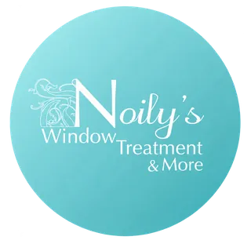
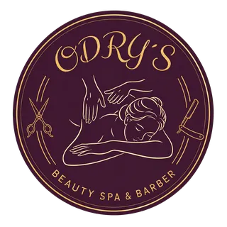
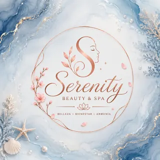
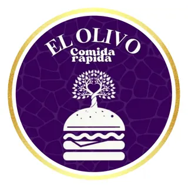
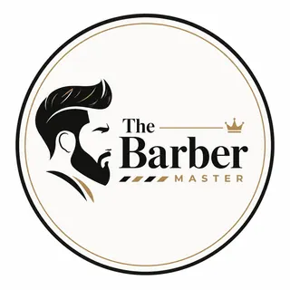
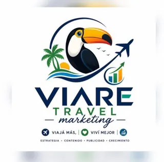
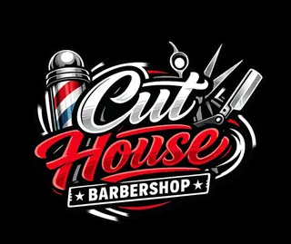

Todo empezó en mi cuarto.
Con una computadora, muchas horas de aprendizaje y un sueño claro: tener mi propia agencia de software y hacer tecnología para los negocios de mi zona.
QUIÉNES SOMOS
AW-RiseCR empezó en mi cuarto en Portegolpe, con el sueño de crear mi propia agencia de software. Hoy ayudamos a negocios de Guanacaste a aparecer en internet, vender más y organizarse mejor.
// Portegolpe, Santa Cruz · Guanacaste
const sueño = "mi propia agencia de software";
const equipo = ["una laptop", "muchas ganas"];
while (sueño) {
aprender(); construir();
ayudar("negocios de Guanacaste");
}
No empezamos con una oficina ni con un gran equipo. Empezamos con ganas de aprender y de resolver problemas reales de los negocios que teníamos cerca.
Con una computadora, muchas horas de aprendizaje y un sueño claro: tener mi propia agencia de software y hacer tecnología para los negocios de mi zona.
Las primeras páginas fueron para negocios cercanos: una soda que necesitaba recibir pedidos por WhatsApp y una barbería que quería verse en internet tan bien como en su local.
Vimos que muchos negocios no tenían cómo hacer que sus clientes volvieran. Así creamos nuestras tarjetas digitales de sellos y puntos, que el cliente guarda en su celular.
Hacemos páginas web, posicionamiento en Google, tiendas en línea, manejo de redes, software a medida y tarjetas de fidelidad. El sueño sigue creciendo, un proyecto a la vez.
Quiero que un negocio de Guanacaste tenga la misma tecnología que una empresa grande, con alguien cercano que se la explique.
AW-RiseCR no busca complicarte con palabras técnicas. Escuchamos cómo funciona tu negocio, te recomendamos solo lo que necesitas y construimos soluciones que puedas usar con confianza.
Cada servicio tiene su página con ejemplos y precios de referencia.
Páginas rápidas, listas para el celular y conectadas a WhatsApp.
Que te encuentren en Google cuando te buscan en la zona.
Catálogo, carrito y pagos con tu marca.
Contenido constante, diseño y anuncios.
Inventarios, citas, CRM y reportes para pymes.
Nuestro producto: sellos y puntos en el celular de tus clientes.
Negocios locales de belleza, gastronomía, turismo, construcción y barbería que nos permitieron convertir sus ideas en soluciones digitales.







Cuéntanos qué necesitas y te orientamos sin compromiso.